Sleepless
Grounds
Sleepless
Grounds
EST. 2026 // BUSTOS, BULACAN
Facebook
Instagram
Google Maps
MENU ↓
DIRECTIONS ↓
Scroll
// Status
2PM – 2AM
Open daily. No excuses.
Coffee flows through the night.
// Location
Bustos, Bulacan
San Pedro, Bustos,
Bulacan 3007, Philippines
// Concept
Coffee & Art
Raw concrete. Industrial lighting.
A space for the sleepless.
// 02 — Menu
FILE: SG_MENU_202602.PNG
// 03 — Directions
From Bustos Public Market
From Tibag, Baliwag
From Sto Niño Parish Church
Your browser does not support the video tag.
Your browser does not support the video tag.
Your browser does not support the video tag.
// 04 — Gallery
[ IMG_SOURCE_PENDING ]
[ IMG_SOURCE_PENDING ]
×
<
>


(1).jpg)